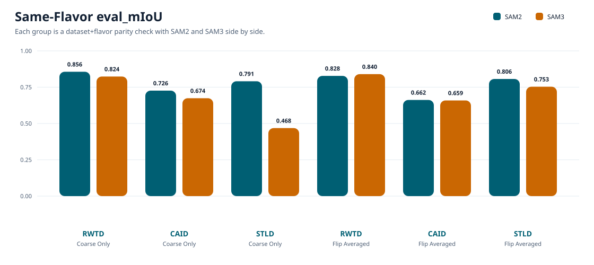
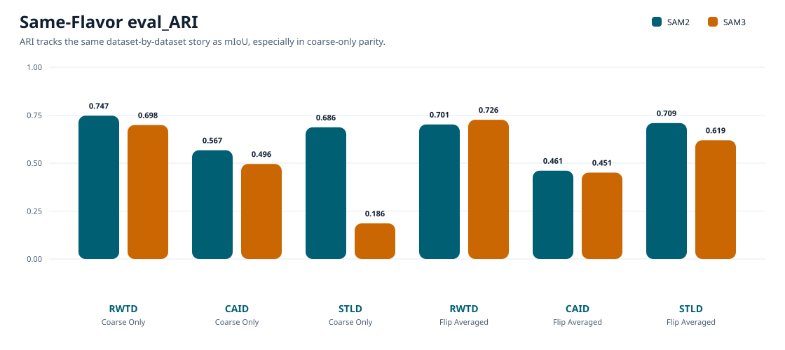
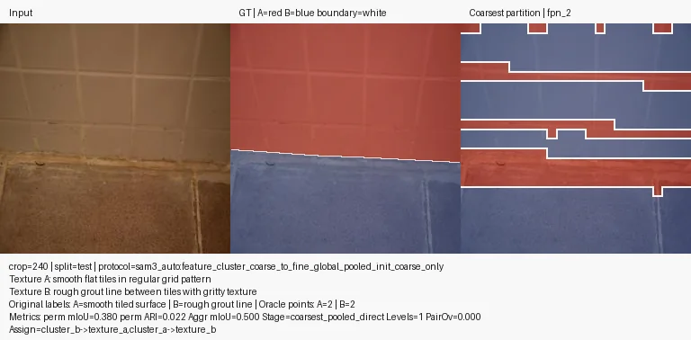
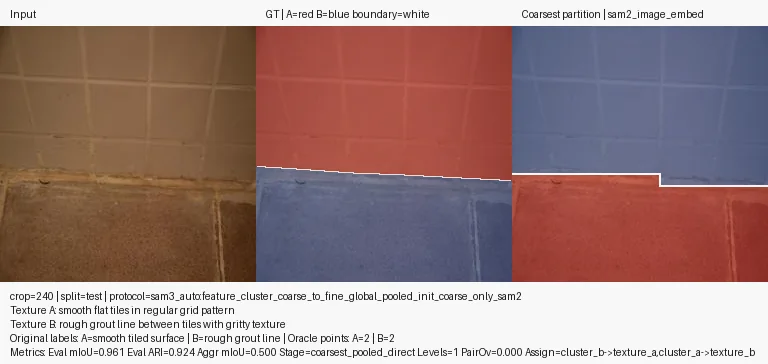
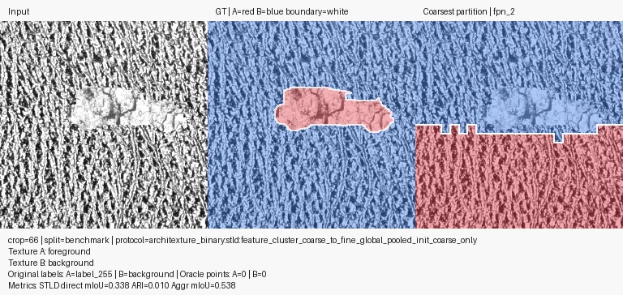

Coarse-Only Lead Split
3/3
SAM2 leads all published coarse-only datasets.
Same-flavor frozen-feature binary partitioning comparisons across RWTD, CAID, and STLD. The cleaner parity view is coarse-only first, flip-averaged second: SAM2 leads every published coarse-only row, keeps the flip-avg lead on STLD and CAID, and RWTD flip-avg remains the lone SAM3 holdout. On STLD, aggregate mIoU stays essentially flat around 0.5 and is better treated as a caution metric than as the headline signal.
This page now uses the cleaner parity view: same dataset, same flavor, model columns side by side. Under that framing, SAM2 leads all three coarse-only rows and keeps the flip-avg lead on STLD and CAID, while RWTD flip-avg remains the lone SAM3 exception.
The important caution is unchanged. On STLD, miou_agg stays clustered around 0.5 across both flavors and both models, so the main interpretable signal is still eval_miou and eval_ari.
Dataset rows are intentionally minimal for readability. Each model cell shows mIoU on the first line and ARI below it, following the cross-dataset benchmark style.
Direct same-flavor parity on the original coarse-only clustering route.
| Dataset | SAM2 | SAM3 | Δ mIoU | Δ ARI | Leader |
|---|---|---|---|---|---|
| RWTD | 0.856
ARI 0.747 |
0.824
ARI 0.698 |
+0.033 | +0.049 | SAM2 |
| CAID | 0.726
ARI 0.567 |
0.674
ARI 0.496 |
+0.052 | +0.072 | SAM2 |
| STLD | 0.791
ARI 0.686 |
0.468
ARI 0.186 |
+0.323 | +0.501 | SAM2 |
Same-flavor parity after the flip-averaged coarse clustering variant.
| Dataset | SAM2 | SAM3 | Δ mIoU | Δ ARI | Leader |
|---|---|---|---|---|---|
| RWTD | 0.828
ARI 0.701 |
0.840
ARI 0.726 |
-0.012 | -0.025 | SAM3 |
| CAID | 0.662
ARI 0.461 |
0.659
ARI 0.451 |
+0.003 | +0.010 | SAM2 |
| STLD | 0.806
ARI 0.709 |
0.753
ARI 0.619 |
+0.053 | +0.089 | SAM2 |


miou_agg Is Effectively FlatAcross all four STLD rows, the aggregate mIoU values are 0.500000, 0.501241, 0.500000, and 0.500825. The total spread is only 0.001241, so this aggregate view is low-signal for the STLD route.
eval_miou and eval_arimiou_agg barely moves.RWTD is split by flavor. In coarse-only parity, SAM2 leads by +0.032553 mIoU / +0.048752 ARI. In flip-avg parity, SAM3 retains a small edge of +0.011973 / +0.024500.
CAID now has both flavors published for both models. SAM2 leads in coarse-only by +0.052070 mIoU / +0.071687 ARI and still keeps a smaller flip-avg edge of +0.003212 / +0.009848.
STLD is the clearest same-flavor win. SAM2 leads in coarse-only by +0.322570 mIoU / +0.500531 ARI and in flip-avg by +0.053013 / +0.089487.
miou_agg is nearly flat across all STLD rows, so it stays a caution metric rather than the headline metric.
The report keeps a few narrative examples inline, while the gallery now uses the same lightweight browser pattern as the Stage-2 page for a wider same-flavor parity subset.
On this tile-and-grout crop, the same-flavor coarse-only comparison is visually clear. SAM2 coarse tracks the diagonal split cleanly, while SAM3 coarse breaks the scene into broad horizontal bands.


This compact synthetic foreground is representative of the coarse-only gap on STLD. SAM2 coarse recovers the object cleanly, while SAM3 coarse overfills a much larger false-positive region.


The thin oblique strip is harder, but the same-flavor flip-avg comparison still separates the models. SAM2 flip captures far more of the structure, while SAM3 flip nearly collapses the signal.


This still does not mean SAM2 is the better model overall. It does mean that, under same-flavor frozen-feature clustering parity, SAM2 appears more cluster-friendly than SAM3 in most of the published binary partition settings here. The exception matters too: RWTD flip-avg stays a slight SAM3 holdout, so the result is route-specific rather than absolute.
miou/ari instead of eval_miou/eval_ari; this report normalizes those fields directly from the summary bundles.miou_agg is visually marked as low-signal because it is nearly constant across both models and both flavors.